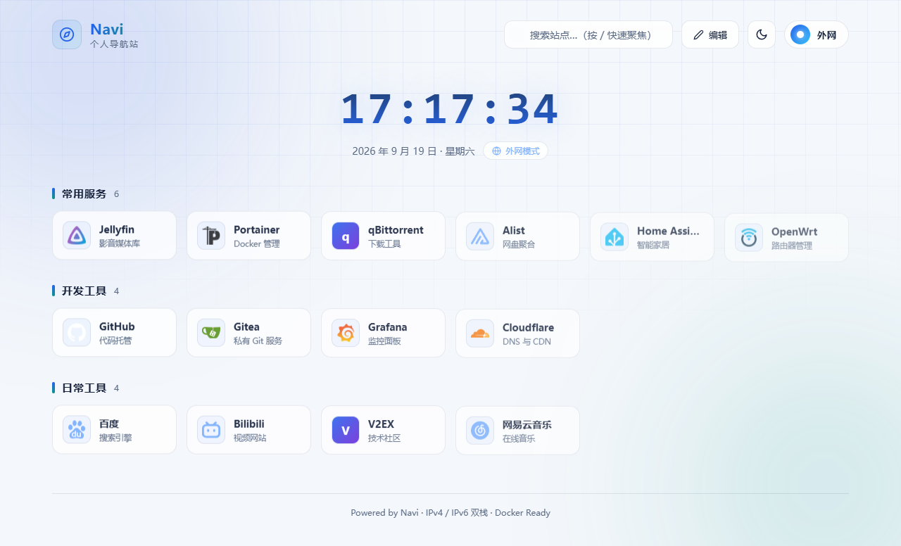

把家里所有服务，收进一个不会烂掉的导航页
Navi 导航站是一个零依赖的 Node 自托管导航页：自动发现局域网里的容器服务、图标本地优先、 日夜间双主题、状态板一眼看清机器水位。运行时只有 Node 内置模块 —— 仓库里连 package.json 都没有， 十年后 clone 下来仍然能跑。
真实运行效果
10 张截图 / 全部来自真实运行实例下面每一张都是实际跑起来的界面（不是设计稿）。点右侧缩略图即可切换 —— 想看可点的版本，去 交互预览页。

核心能力
P0 · P1 · P2每一项都标注了守住它的测试套件 —— 文档里的说法必须有人守着，否则它一定会烂掉。
离线拼音搜索
内置 2 万余字拼音表，按音节边界对齐匹配首字母 —— 输入 jtyy 命中「家庭影院」，而不是被跨音节噪音污染。支持全拼与松散兜底。
⌘K 命令面板
与卡片网格共用同一套匹配排序函数（两处判定不可能不一致）。↑↓ 选择、Enter 打开，还能把关键词直接交给外部搜索引擎。
卡片级内外网策略
每张卡片独立选择自动 / 内网 / 外网，内网可达性异步探测并缓存，不阻塞渲染；浏览器能力缺失时降级跳过判定，而不是误判成失败。
含图片的完整备份
自己实现 ZIP（写出 + 读取 + CRC32 校验），备份可连图床库图片一起打包，恢复时自动识别 zip / json 两种格式。
首页状态板
容器数 / CPU / 内存 / 磁盘水位。CPU 用两次采样差值算；采不到就给 null、从不给 0；从头到尾没成功过就静默隐藏并停止轮询。
图标本地优先
内置 227 个图标、构建期生成映射表，解析顺序「本地 → CDN」。断网或纯内网也能出图，加载失败降为字母方块而不是破图。
服务发现的来源追踪
自动发现的卡片带来源标记，源侧消失时只标记不删；「检测不到」与「检测到坏了」严格分开，避免没挂 socket 就一屏标红。
标签 · 跨分组检索
给「类别记得、名字忘了」兜底：标签进匹配链并支持拼音，点标签即跨分组筛选，面板命中时还会标注命中原因。
架构与模块
后端 4 文件 / 前端 4 文件 + 2 生成物依赖严格单向、无环。改动前先看这张图：任何一个模块改名或新增，都必须同步 Dockerfile 的 COPY 清单。
唯一入口。环境变量解析、配置读写与写入口校验、认证闸门、全部接口路由、静态托管与 HTML 注入、备份恢复上传、登录限流。
服务发现：Docker API 列容器 → 端口提取 → 指纹匹配 → 图标推断；不可用时退化为扫本机端口。33 类服务预设。
状态板采集：CPU 差值、内存（含 cgroup 限额）、磁盘水位、容器统计、上传目录占用。
零依赖 ZIP：写出（store/deflate）与读取，含 CRC32 校验。「备份含图片」与「恢复整包」压在它上面。
两处刻意取舍：登录页不引任何外部资源 —— 即使样式表被缓存污染，登录入口也必须能渲染； 前端版本号按目录 mtime 自动推导 —— 手工维护必然忘，表现为「代码改了、镜像也重建了，页面还是老行为」。
文档与页面
7 页 + 3 份 PDF按「先看什么」排序：想直观感受就进预览页，想知道怎么做的读概览，想部署就读对应平台的指南。
交互预览页
完整还原首页布局与三大模块：服务发现 / 图床库 / 在线图标、主题切换、卡片编辑，含 10 张真实截图。
项目概览
目录组织、模块职责与依赖方向、数据模型全字段、接口清单、6 条关键调用链、功能盘点与技术取舍。
迭代成果
本轮 10 项改动的修改前后对照、可交互 demo、5 个真实缺陷的修前修后，以及断言增长曲线。
改进路线图
对标同类项目的差距分析、P0–P2 计划与逐项完成状态（含刻意搁置的项与理由）。
Docker 部署指南
镜像构建、目录挂载、密码与环境变量、健康检查、升级与备份还原，适用于群晖 / 威联通 / 通用 Linux。
拉取镜像部署
不构建、不传源码：镜像由 CI 自动发布到 GHCR（amd64 + arm64），目标机器只需一条 pull 命令。
飞牛 fnOS 部署
从 SSH 登录、镜像构建、Compose 校验、端口与存储映射，到启动验证与常见问题排查，共 15 个章节。
PDF 离线版
三份指南的 PDF，方便打印，或在没有网络的环境下逐条对照执行。
三种部署形态
数据目录是唯一不可再生的东西
镜像＝程序（随时可重建），data/ 才是唯一不可再生数据（config.json 与 uploads/）。
升级前先 tar czf backup.tgz -C . data。
源码构建（默认）
本机构建镜像，改完代码重建即生效。
# 必须设置密码，否则服务主动退出 NAVI_PASSWORD=你的密码 docker compose up -d # 端口 8080:80 · 数据挂 ./data:/app/data
拉取预构建镜像
不构建、不传源码，直接用 CI 发布的多架构镜像。
docker compose -f docker-compose.image.yml up -d
# 用 NAVI_IMAGE / NAVI_TAG 指定镜像源与版本
裸 Node 运行
适合本地开发与预览，不碰容器。
NAVI_PASSWORD=你的密码 node server.js
# 读 public/config.json 与 public/uploads
质量与红线
19 套件 / 958 断言 / 0 失败四条红线是这个项目所有取舍的裁判。任何一条被破坏，改动就不算完成。
运行时只有 Node 内置模块，仓库里没有 package.json。写 ZIP、拼音、图标库都自己实现 —— 代价是多写代码，收益是十年后仍能跑。
CI 里 amd64 + arm64 双架构构建，以及「启动容器请求健康接口」两个 job 是硬闸门，任何一个红都不算完成。
基线记录通过数与失败数，任何改动通过数只能 ≥ 记录值且失败必须为 0。文档里出现的每个数字都要有断言守着 —— 否则它一定会烂掉。
挂 socket 等于把宿主机 root 交给容器，所以它是可选的：未挂载时只有「容器视角」的状态板降级，服务发现退化为扫本机端口，其余照常。
最省事的一条命令跑完全部套件：node test/run-all.cjs ——
它会用临时 config 与临时 uploads 在 8633 端口拉起隔离实例，不碰真实数据。
其中 9 套是真实浏览器 UI 测试，2 套通过伪造 Docker API 端到端验证容器发现与状态采集链路。